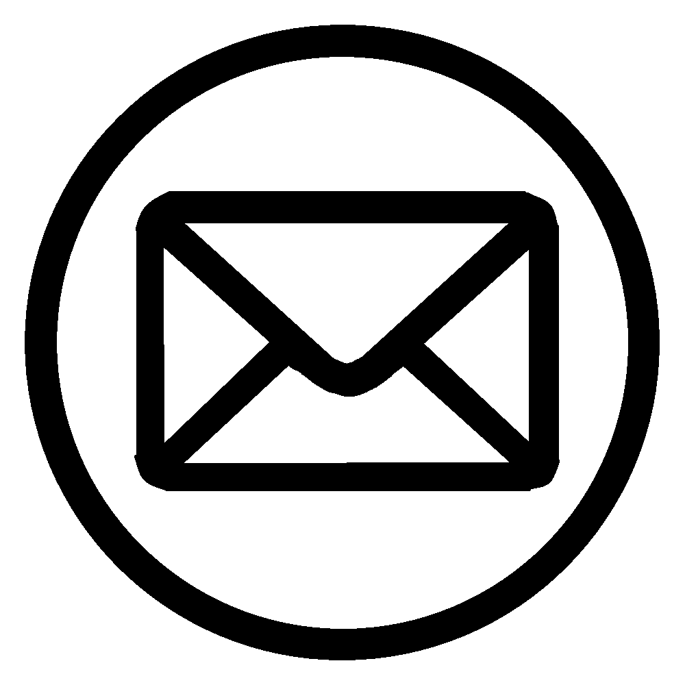

Géptervezés és géptelepítés mesterfokon

Percze Máté
Gépészmérnök
Elérhetőségek:
(+36)-30 769 8990
mate.percze@pro-engine.hu
info@pro-engine.hu
Percze Máté vagyok, projektvezető géptervező mérnök. Karrieremet egyből a mélyvízbe dobva egy kis gépgyártó cégnél kezdtem, ahol a géptervezést, szerelést és a projektvezetés csínját egy számomra mentornak tekinthető főmérnök mellett tanultam meg. Majd egy nagyobb gépgyártó cégnél folytattam, és kamatoztattam a tudásom, amelyet egy év alatt a géptervező részleg vezetőhelyettesi címével honoráltak. Egy hónapja döntöttem el, hogy az utam a vállalkozói szférában folytatom annak érdekében, hogy minél több géppel és igazán szakmai dolgokkal tudjak foglalkozni. Pályám során terveztem hegesztőrobot-cellát, szivárgásvizsgáló berendezést, automata csavarozógépet, több robotos, automata elektronikai terméket szerelő és ponthegesztő gépet, hajlító- és vágókészülékeket, hegesztőkészüléket, több méter hosszú pódiumokat, tárolókocsikat, tárolószekrényeket, manipulátorokat, alumínium profil kereteket, készítettem robotzsámolyokra egyszerűbb statikai jegyzőkönyvet végeselem-analízissel.
Általam tervezett gépek
A lenti képen szerelés alatt álló kismegszakító-tekercs szerelőgép látható, amely ponthegeszt, tántorogva szegecsel és hajlít. Az alapanyag berakását egy portálszervó-manipulátor adagolja regegőadagolókból, és egy robot helyezi a megfelelő csúszdába.
Ez pedig egy több robotos, több rezgőadagolós, 6 állásos, korasztalos, teljesen automata elektronikai terméket szerelő és ponthegesztő gép, amelybe egy egyedi kondenzátoradagolót terveztem.
Egyéb munkáim
Kézi pneumatikus rotor-tengely fordítószerkezet.
Rotor hegesztő robot cella
Autóalkatrész-tároló
Öntvényszivárgás-vizsgáló berendezés.